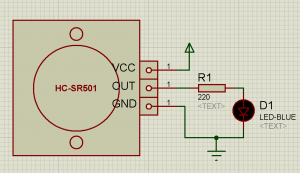
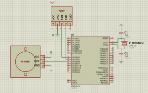
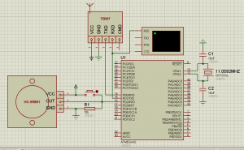
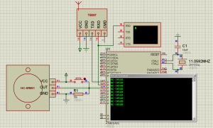
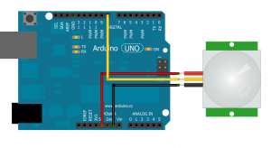
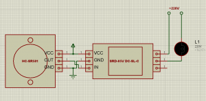

MicroPi
- Главная
- Мини ПК
- Датчики
- Схемы
- Радиоуправление
- COM Порт
- Утилиты
MicroPi > Схемы > Схемы подключения датчиков
Схема подключения датчика движения (присутствия) HC-SR501
29.10.2016Схемы подключения датчиковКомментарии: 24
Схема подключения датчика движения HC-SR501 со светодиодом. Проверить работу датчика очень просто, собрав на макетной плате простую схему. В качестве индикатора здесь используется обычный светодиод, с токоограничивающим резистором в порядка 220 Ом, как показано на рисунке.
Содержание
Схема подключения датчика движения/присутствия HC-SR501 к ATmega16
Часто необходимо подключить данный датчик (HC-SR501) к какому-нибудь микроконтроллеру и сделать ту или иную операцию. К примеру, при срабатыванию датчика, микроконтроллер, в моём случае ATmega16, отправляет через USART/UART радио модули TB387 сообщение.

К сожалению, в библиотеке Протеуса нету ни HC-SR501, ни радио модули TB387, данные элементы просто нарисованы. Для эмуляции датчика движения взял кнопку, а для приёма данных — терминал. При нажатии кнопки контроллер перехватывает сигнал и, через Tx, отправляет текстовое сообщение.

Результат можно увидеть на картинке ниже.
Код программы: файл main.c
#define F_CPU 11059200UL // Clock Speed
#define BAUD 9600
#define MYUBRR F_CPU/16/BAUD-1
#include <avr/io.h>
#include <avr/interrupt.h>
#include "uart.h"
ISR(INT0_vect) {
// отправляем сообщение
USARTTransmitStringLn("HC-SR501");
}
void InitINT0() {
//настраиваем вывод на вход
DDRD &= ~(1<<PIND2);
//разрешаем внешнее прерывание на int0
GICR = 1<<INT0;
//настраиваем условие прерывания. По нарастающему фронту
MCUCR = 1<<ISC01 | 1<<ISC00;
}
int main(void) {
cli();
USARTInit(MYUBRR);
InitINT0();
sei();
while (1) {
asm("nop");
}
}
Скачать
проект в Atmel Studio 7 HC-SR501 + ATmega16.7z
Результат

Схема подключения датчика движения HC-SR501 к Arduino
Самым простым примером работы с датчиком движения HC-SR501 является следующий скетч. При обнаружении движения в порт пишется состояние датчика. При срабатывании датчика пишет Движение!, в противном случае — Нет движения.

Скетч в Arduino
int pirPin = 8;
int val;
void setup() {
Serial.begin(9600);
}
void loop() {
// Читаем состояние PIR
val = digitalRead(pirPin);
// Если обнаружили движение
if (val == LOW) {
// равно 0
Serial.println("Нет движения");
} else {
// равно 1
Serial.println("Движение!");
}
delay(1000);
}
Схема подключения датчика движения HC-SR501 к реле SRD-05VDC-SL-C (220 В)
Многие со мной соглашаться, что данный датчик нужен, в большинстве случаях, для включения и выключения обычной лампочки в наших тёмных подъездах.

Для этого нам понадобится: сам датчика движения HC-SR501, выпрямитель на 4,5-20 вольт, реле типа SRD-05VDC-SL-C и лампочка на 220 В. Если собираетесь подключить к аккумуляторной батареи на 12 В, вам не нужен будет выпрямитель. Схему подключения можете увидеть на картинке выше.
Скачать
Проекты в ISIS Professional HC-SR501 Proteus
Похожие записи
Метки: arduino, ATmega16, HC-SR501, HCSR501 модуль, pir, Pir sensor, Proteus, sensor, SRD-05V DC-SL-C, SRD-05VDC-SL-C, ардуино, Датчики, Инфракрасный датчик движения, Схема подключения
Комментарии24
26.03.2018 в 16:53
Есть у этого датчика серьезный косяк , по сравнению с хорошими датчиками , он фасеточный , и фасетки крупные . Что бы он постоянно поддерживал освещение — нужно постоянное движение-перемещение между фасетками , чем крупнее фасетки , тем интенсивнее должны быть перемещения , сократить периодичность необходимых для непрерывной работы перемещений можно увеличением времени таймера ,несмотря на наличие контроллера , алгоритм , да и принцип работы в целом ущербный .(он реагирует на перепад , а статичное тепло он видит , но не реагирует ,это вызывает серьезные ограничения в количестве мест его использования , оно ограничивается* проходными*)
 Михаил
Михаил Valeontir
Valeontir